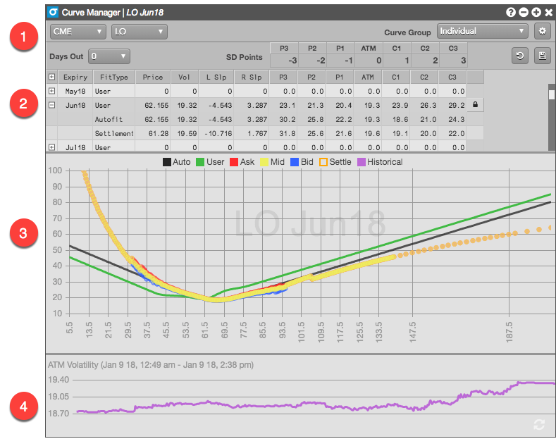
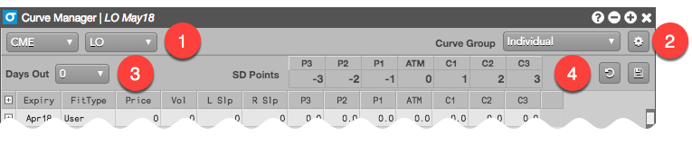
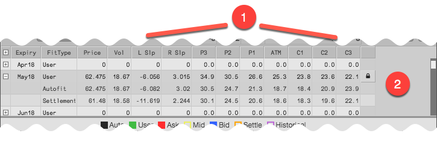
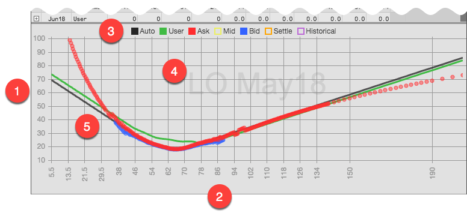
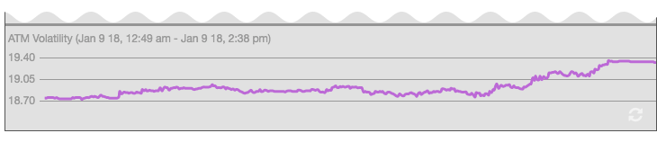

The Vol Curve Manager displays multiple volatility curves for an options expiration and gives users the ability to create their own volatility curve. The graph displays the implied volatility for the bid price, for the ask price and for the previous day's settlement. TT automatically fits a curve using that data and gives users the ability to fit their own curve using a number of control points. Additionally, users can view how TT's best fit volatility curve has changed over the course of the previous trading day.

- Product-level settings
- Available expirations for the selected product, along with their slopes and volatility levels at each control point
- Graphing area to display the various volatility curves
- Display of historical ATM volatility for the selected expiry
Product-level settings
This section identifies the product for the widget and lets you customize settings that apply to all expiries for the product.

- Market and product selectors.
- Widget settings, including the interest rate and calendar to use for volatility calculations.
- Percentage of the current trading day you want to move forward to adjust for intra-day decay.
- Product-level control points in standard deviation terms to give you greater flexiblity over your prices.
Product expiries
The section of the widget lists all of the available expiries for the selected product.

- Slopes and volatilities used to calculate the curves for the expiries
- Available expiries for the selected product, along with their calculated User, Autofit, and Settlement volatility curves
Volatility curves graph
This section displays the calculated volatility curves for a selected product expiry.

- Volatility (Y-axis)
- Underlying strike price (X-axis)
- Selected volatility curves to show on the graph
- Expiry shown in the graph
- Volatility curves based on the specified volatility calculations
Historical ATM (At the Money) volatility graph
The Historical ATM volatility displays a graph of the at-the-money volatility beginning with the start of the previous trading day.

Volatility calculations
The following volatility values are calculated and displayed in the Vol Curve Manager and Options Chain based on the volatility curve:
- Autofit (TT-calculated) volatility — Autofit vols are calculated by TT, but can be modified by a user in the Vol Curve Manager. By default, this vol is used for calculating theoretical call and put values.
- User volatility — User vols are entered via the Vol Curve Manager, which fits the curve to the control points on the volatility curve. The user volatility values are calculated as a result of the fitting process. If a user vol is calculated, the value is used for calculating theoretical call and put values.
- Implied volatility — Calculated using the midpoint of the bid and ask prices.
- Settlement volatility — Calculated per strike using settlement prices.